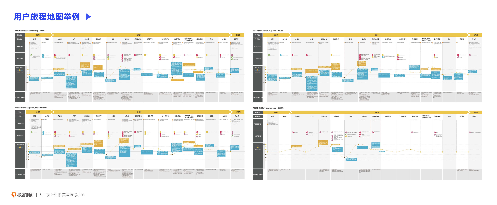
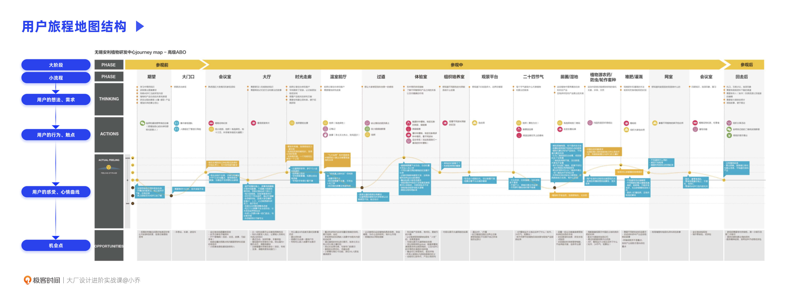
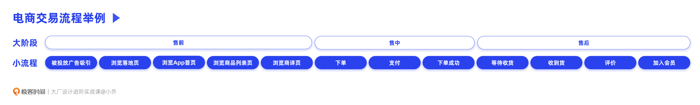
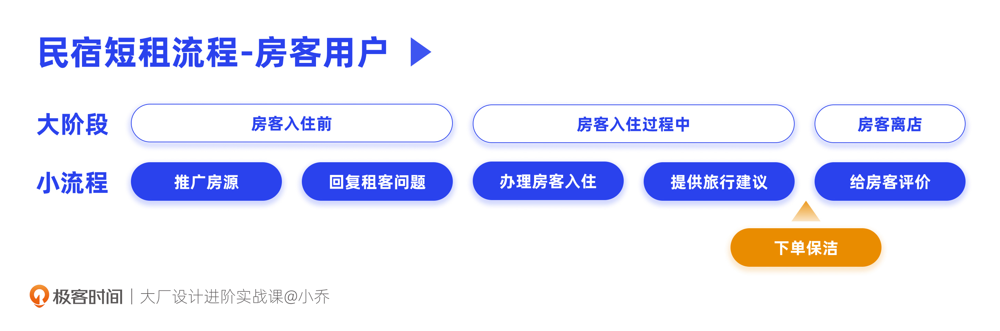
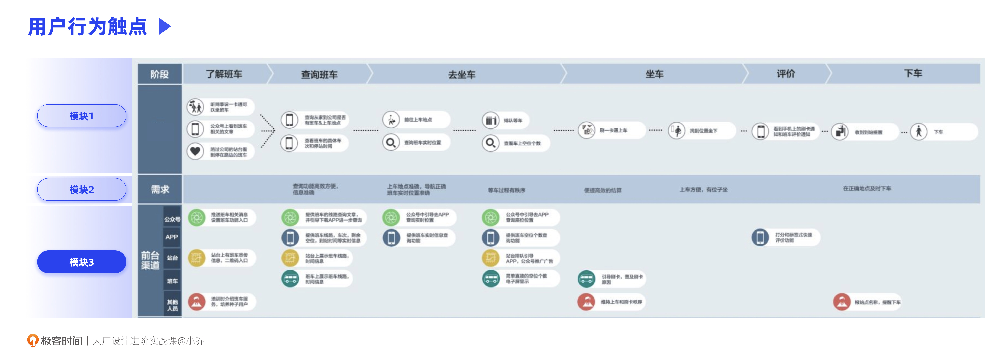
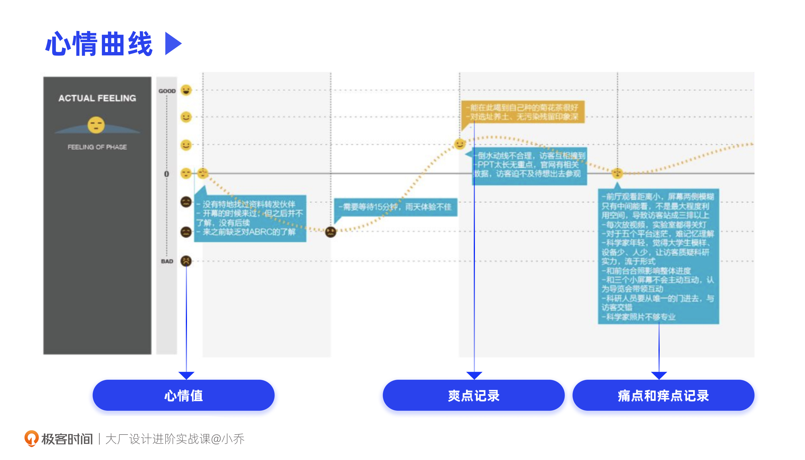
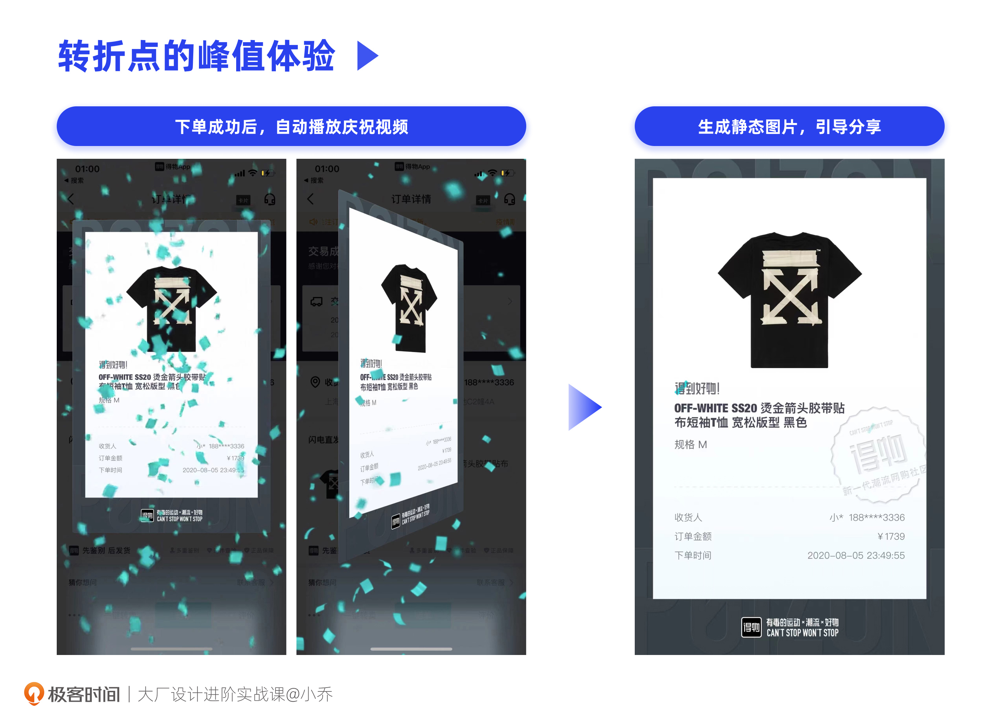
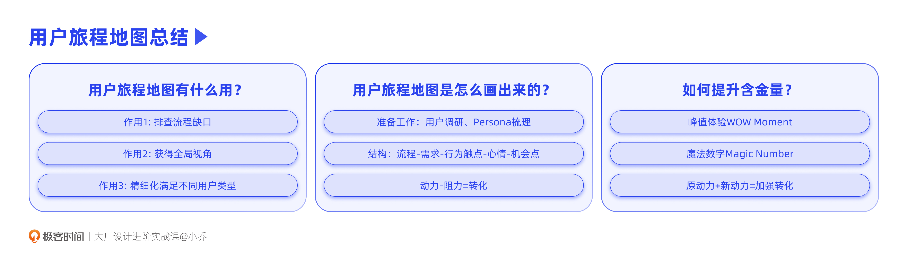

- 00 开篇词 升维思考，是设计师有效成长的第一步.md.html
- 01 业务周期：0-1-10-100-N的发展策略.md.html
- 02 商战模式：如何在商业竞争下突出重围？.md.html
- 03 市场洞察：如何找寻差异化撬动支点？.md.html
- 04 用户洞察：不懂用研的设计师不是好职场人.md.html
- 05 用户画像：是形式主义还是真的有效？.md.html
- 06 用户旅程：挖掘不同用户的核心机会点.md.html
- 07 职场晋升：看懂晋升的“游戏规则”.md.html
- 08 设计价值升级：五层进阶突破成长.md.html
- 09 基础价值 核心三原力：如何将需求转化为设计稿？.md.html
- 10 基础价值 第一性原理：从问题本质解决问题.md.html
- 11 基础价值 设计复盘：只是量化设计结果吗？.md.html
- 12 二级价值 负向网兜：如何全面发现负向问题？.md.html
- 13 二级价值 设计自驱：如何做好项目Owner？.md.html
- 14 二级价值 自驱合作：如何反内卷处理合作关系？.md.html
- 15 三级价值 增长误区：思维惯性陷阱和虚荣数据.md.html
- 16 三级价值 用户增长历程：AARRR是万能的吗？.md.html
- 17 三级价值 产品增长：如何做好产品创新？.md.html
- 18 三级价值 运营增长：如何自驱营销活动和投放？.md.html
- 19 三级价值 品牌增长 抢占心智，赢得人心红利.md.html
- 20 三级价值 增长实操：如何“步步为营”推动落地？.md.html
- 21 四级价值 L型赋能：让T型人才发挥更大价值.md.html
- 22 四级价值 “网状对比”解决共性痛点.md.html
- 23 五级价值 商业画布：设计师可以担任业务方吗？.md.html
- 24 五级价值 共创洞察：如何做好一次完善的workshop？.md.html
- 25 五级价值 领导力觉醒：写给新晋管理者.md.html
- 26 工作选择（上）：2B or 2C设计师？如何规划领域？.md.html
- 27 工作选择（下）：大厂 or 小厂？如何选择赛道？.md.html
- 28 人才地图：认知自我，成为高潜力人才.md.html
- 29 成长历程：如何从设计小白成长为团队负责人？.md.html
- 30 冰山模型：如何成为让面试官欣赏的“面霸”？.md.html
- 31 作品集指导：什么是面试官喜欢的作品集？.md.html
- 用户故事 什么是职场设计师进阶的正确姿势？.md.html
- 结束语 突破自我，成人达己.md.html
- 捐赠
06 用户旅程：挖掘不同用户的核心机会点
你好，我是小乔。
在上节课，我们已经推导得出了几种用户画像，这节课让我们继续顺延用户思维，一起学习用户旅程地图。
在我读书的时候，这些科学的工具方法并没有融合在教育课程中。我第一次接触用户旅程地图，是在咨询行业的时候，那时候只有英文的叫法：Customer Journey Map。但值得开心的是，我在近几年做校招面试时，发现作品集中都有对旅程地图的表达，这也说明设计行业的教育越来越科学和规范。
即便如此，在工作和面试招聘中，我们依然可以发现种种用户旅程地图的错误用法，比如：
- 没有经历过用户调研，凭空臆断，画出了一张用户旅程地图，却不知道用户旅程通常是由几张图一起构成的；
- 为了汇报或面试，套用了模板，却无法推导出有效信息，沦为了形式主义；
- 机会点中只有表面推导，没有融入对业务目标和企业资源更深入的理解。
这些业内的普遍错误，也误导着许多设计师，让他们误以为自己懂了，却陷入了“我不知道自己不知道”的窘境。接下来，就让我们完整地学习用户旅程地图的分析方法，将它用到实处。
用户旅程地图有什么用？
首先，让我们一起来探讨用户旅程地图的作用。丰富的方法、模型、工具，构成了我们的装备库，但只有理解了每个装备的作用，我们才能在需要的时候正确应用。
用户旅程地图主要有3个作用：
作用1：排查流程缺口。这是用户旅程地图最基础的作用，在我们梳理流程的过程中，可以回顾用户的整个体验路径是否完整闭环。
比如在电商平台，用户通过导购流程锁定感兴趣的商品，再通过详情页深度了解商品，从而下单支付。乍一看是不是挺完整的？但这条任务流程中，缺少了吸引用户进入App的流程，也没有吸引用户再次复购的钩子。用户旅程地图，就可以帮助我们排查出流程上的空缺。
作用2：获得全局视角。通过可视化梳理用户在每个流程中的需求、痛点，有助于我们升维思考，获得全局观。用户旅程地图可以避免我们在设计产品功能和运营推广时，过度聚焦在某一个点上，而忽略了更为重要的机会点。将点连成线去思考，更有助于资源的合理投入，使价值最大化。
我们依然以电商平台举例，如果用户买过一次就不再复购了，第一假设也许是用户流失了，我们要将资源投入在推送上，不断触达用户，从而召回用户。但通过分析用户旅程图上的每一个节点，得到的答案也许是用户觉得物流太久，用户觉得开箱体验太差，用户找不到想买的东西，这样梳理下来，每个流程要优化的机会点就很清晰了。
作用3：精细化满足不同用户类型。许多设计师以为用户旅程地图只有一张，其实不然，用户旅程图是与Persona一一对应的。
以滴滴为例，即便用最粗的颗粒度，还能区分出司机用户和乘客用户两种，如果颗粒度再细致一些，乘客用户还有高端商务、经济通勤等类型，司机用户也有偶尔代驾、日常工作等不同类型。每一种用户类型的需求、痛点、想法是相似的，但不同用户类型之间是有显著差异的。
随着产品经历不同的发展阶段，核心用户类型也会拓展，还记得我们在生命周期一课中讲过的内容吗？成长期业务会拓展用户类型，成熟期需要精细化运营每一类用户。
下图是我曾经为安利做过的咨询项目，4种Persona，分别有各自的用户旅程图，且每张都有所差异。清晰每类用户的诉求、痛点、体验心智，才更有助于我们找到机会点。

用户旅程地图是怎么画出来的？
在了解了用户旅程地图的作用后，我们来看看它的组成结构和制作步骤。
在绘制用户旅程地图前，首先需要做好准备工作：优先完成用户访谈和Persona梳理，有了不同的用户类型，并清晰用户在不同阶段的痛点问题，才能进行用户旅程图的绘制。
用户旅程图适合哪些角色一起来制定呢？虽然体验和设计师的关系更大一点，但如果可以的话，我还是建议你组一个虚拟团队。在产品经理、运营、战略等不同的职能团队中，挑选相关同事和你一起完成，这样将有利于吸收更全面的信息，也可以在这个过程中，让各职能建立一致的心智模型。
当万事俱备，就可以开始绘制用户旅程地图了。下图是用户旅程地图的组成结构，你可以看到，主要由5大块内容组成，分别是：大阶段和小流程、用户的想法和需求、用户的行为和触点、用户的感受和心情曲线、机会点。

这个组成结构并不是一成不变的，可以根据我们的项目需要，在这个模型的基础上，无限扩展其它需要的模块。比如，可以加入我们业务的优劣势梳理、每个流程要达成的优化目标和衡量指标等。
接下来，我们说一说最基础的五大模块是怎么画出来的。
模块1-大阶段和小流程：
在这个模块中，我们要根据每一类Persona的核心流程来制定，非核心流程可以不包含在用户旅程中，但要尽量包含这条核心流程的全部节点。流程颗粒度的大小，由我们本次项目的范围决定。
我们以电商的交易流程为例，它的大阶段可以是售前-售中-售后，小流程就是将每个阶段更为细化。比如售后有等待收货、收到货开箱、给出评价、加入会员等小流程。平台或商家为了引起用户的好评和复购，往往会在这些流程中提供促进转化的功能或服务，比如在下单成功页赠送下次购物的优惠券、在用户开箱时看到惊喜小礼物、引导高净值用户办理会员卡等等。

如果我们这个项目仅针对办理会员卡这一业务做用户旅程地图，那就是在办卡前-会员期-过期后的大阶段下，规划更为细致的小流程。
模块2-用户的想法和需求：
在这个模块中，我们要将用户访谈中收集到的需求和想法对应到每一个流程中去。
在梳理用户需求的过程中，也需要不断补充我们上一个模块的流程。有些需求和痛点，正是因为我们的流程不够完善，造成了用户的体验缺口。
比如Airbnb的房东用户，在上个房客退房、下个房客马上入住的间隙，很难约到打扫阿姨临时过来，即使提前一天也很难预订到。因为民宿不同于酒店，酒店有很多房间，打扫阿姨是固定每日上班的，但民宿因为只有一间，每个住客的入住天数也不同，无法形成稳定的雇佣关系。
因此，房东用户的需求是，希望在上一个房客退房后，可以预约到打扫阿姨。此时，如果我们负责分析Airbnb的用户旅程地图，就需要补充一个清洁打扫的流程，可以满足房东用户的需求。事实上，Airbnb确实补充了这一功能，房东可以通过平台预订附近的打扫阿姨。

模块3-用户的行为和触点：
在这个模块中，需要梳理用户在每个流程中完成的主要行为，以及分别是通过什么触点完成的。
触点就是用户接触到产品和服务的渠道。比如吸引房东用户入驻Airbnb，就要让用户接触到这个信息，触点可以是：投放了广告的大流量App、推荐和介绍这个产品服务的朋友、有广告牌的地铁站等等。
以下图为例，是我在咨询行业时，为老东家华为制定的员工乘坐班车流程，用户的行为触点有公众号、App、站台、班车和相关人员。

模块4-用户的感受和心情曲线：
在这一模块中，需要将用户在每个流程中的感受用心情值量化出来。
我通常会将心情值分为7档，你也可以分为5档或9档，可以帮助你梳理清晰即可。如下图所示，中间表示平静无感，以中间为基准，越往上越满意，越往下也越失望愤怒。将全流程的心情连在一起，就可以看出哪些流程中用户感受不错，哪些地方体验很糟糕。
同时，在这个过程中，也要将用户反馈的爽点、痛点和痒点记录下来，帮助我们梳理什么功能和服务可以受到用户青睐，什么方面会引发反感。建议使用不同颜色标记优缺点，便于后续高效分析。

模块5-机会点：
这一模块，是整个体验流程图中价值最大的部分，推导出干预用户体验感受的机会点，直接决定了业务后续的to do。
纵向来看每一个流程，根据前面整理的用户需求、行为、触点、心情感受、优缺点等内容，基本可以得出针对这一流程的优化机会点。我们的目标，就是针对心情曲线，放大爽点，解决痛点。那我们具体要怎么做呢？
这里有一个公式：动力-阻力=行动
我们会发现，用户愿意使用我们的产品和服务，并在整体流程中循环往复，正是因为整体的动力远大于阻力。当我们梳理完所有的机会点后，就可以根据优先级推进落地了。
到此为止，我们得到了一个完整的用户旅程地图，也与其他职能的同事达成了一致的心智模型。但我们需要明白的是，不同经验和能力的同学，在同样使用这套方法时，产出的效果也许是大相径庭的，那有什么方法可以帮助我们提升自己的产出价值呢？
如何提升用户旅程地图的含金量？
想要提升用户旅程地图的含金量，我们就要“拿捏”住用户的心理，并充分融入我们对业务的专业理解。我想向你介绍两个概念，峰值体验和魔法数字。
峰值体验：WOW Moment
在商业竞争激烈的环境下，什么样的产品和服务能给用户留下深刻的印象呢？怎样才能让用户念念不忘，反复多次使用产品和服务呢？这就需要我们在用户的印象中形成“记忆隆起”。
在2002年获得诺贝尔经济学奖的心理学家丹尼尔·卡尼曼，提出了“峰终定理”。简单来说，是指人们的记忆由两个因素决定，分别是高峰和结束时的体验感受。无论好坏，这都将定性人们对这次体验的印象。
因此，在我们梳理完用户旅程图的机会点后，可以再整体回溯一下心情曲线。在哪些流程中打造峰值体验可以使效果最大化呢？相信你已经明白，在全流程的结尾处或接近结尾处创造超出预期的WOW Moment，是最能引起用户好感的，这直接影响到用户的下一次复购和向他人推荐的动力。比如宜家的峰终体验是1元冰淇淋，这会让用户原谅购物过程中那些必须走完的S型购物路径。
如果说动力-阻力=转化，那么我们去除负向体验，提供更多爽点，就是原动力+新动力=加强转化。
除此之外，也建议你在前面的流程中，加入1-2个WOW Moment，将会提升用户对整体产品或服务的好感度。什么流程中适合加入WOW Moment呢？我们有3个选择：
选择1：体验的转折处。比如在电商平台，用户下单成功，下一个阶段是坐等收货。那么在下单成功时，就可以提供WOW Moment。
以得物为例，用户下单成功时，会跳出所购买商品的庆祝视频，并生成卡片，引起用户的分享动力，提升分享传播率。

选择2：里程碑时刻。当用户取得阶段性结果时，给予高出预期的奖励。这就像是我们谈恋爱一样，和男朋友或女朋友一起隆重地度过100天纪念日、周年纪念日。
举个例子，许多奢侈品品牌，在用户累计消费达到一定金额时，就会提供额外的礼物和服务。这样的思路可以运用在各行各业，比如一个音乐软件，用户累计听满1000首歌时，可以送个老粉福利；一个短视频软件，用户的粉丝量达到10W时，可以开通额外的惊喜服务。
选择3：他痛我优。当竞品在一些共同的流程中痛点明显时，我们就可以在这些流程中做出优势，在用户心中形成对比。
同样，对我们自己来说，在创造峰值体验之前，我们应当优先将自己的致命缺点尽快优化，使用户的心情线都达到中线以上，否则即便有峰值体验，也会阻碍用户的使用动力。
魔法数字：Magic Number
当我们加入了峰值体验之后，还需要再次回顾一下，我们对行业和业务的了解是否都已经包含进去。这里，我们以魔法数字作为例子。
不知道你是否好奇过，为什么淘宝的一个商品总会反复推荐给你，你明明没有购买，但还是会反复让你看到？因为经过数据分析，用户反复看到一个商品6次，就会更容易下单。
同理，我曾经在抖音刷到过一个麦丽素广告，停留的时间长了一点。于是抖音就推测我对那款麦丽素有购买欲望，在那之后的每一天，我都会刷到那款麦丽素，其实就是在引导我看到第6次后下单转化。因为我知道这些“套路”的逻辑，就在看到第4次时，果断点了“不感兴趣”，让自己不被“算计”。
除了电商产品外，其他行业的产品也多多少少存在魔法数字。比如，Facebook的新用户如果能在10天内关注7个好友，就能让用户留下来继续互动；新用户在知乎注册后，如果被邀请回答3次提问，也将更容易留存；Linkedin的新用户如果在7天内加了5个联系人，他们的留存率和使用率会提升3.5倍。
根据业务想要提升的目标，比如留存、成交转化、复购等，找出相关联的用户行为条件，其数量就是魔法数字。找出魔法数字通常是数据分析师和算法的工作，而我们要做的，是将这些业务知识融入到用户旅程地图中。
Facebook的用户不会认为注册后没有在10天内关注7个好友是痛点，但是我们自己在机会点中，就需要将这个因素考量进去，并在新用户注册的流程中推进实现。
因此，我们在梳理机会点模块时，思路不应该仅仅停留在解决图上的痛点，也要将峰值体验和业务理解考虑进去，这才是完整且有含金量的用户旅程地图。
今日小结
今天，我们一起学习了用户旅程地图的相关知识，了解了它的重要性、组成和步骤，以及提升机会点含金量的方法。
用户旅程地图可以帮助我们排查流程缺口、获得全局视角、精细化服务好不同用户类型。在绘制用户旅程地图之前，需要提前完成用户调研和Persona的梳理，鼓励其他职能的同事与我们共创完成。在梳理机会点时，先根据图中的痛点梳理优化方案，再全盘回顾一遍，将峰值体验和业务知识融入进去，使价值最大化。

许多设计师虽然图本身画得非常漂亮，但是没有把用户旅程地图的正确方法整明白。我想说的是，其实地图的形式没有那么重要，重要的是分析过程和结论的含金量。除非是咨询公司向甲方汇报，其他时候，我们都可以用马克笔在白板上画，或者拿协同办公软件的表格来画。
到此为止，我们这一章的课程就全部结束了。
让我们一起来简单回顾一下：我们想要获得能力和薪资的成长，就需要告别美工身份，除了设计技法以外，更要具备设计策略思维。这就要求我们设计师对商业和用户有一定的洞察分析能力。
- 在前面3节课程中，我们一起探讨了业务周期和商战模式，根据每个阶段的业务重点来推导设计的发力点，并且学到了根据市场调研得到答案，打破信息差的方法。
- 在后面3节课程中，我们探讨了丰富的用户调研方法，并深度学习了可以帮助我们推导出业务机会点的用户画像和用户旅程地图分析方法。

恭喜你已经填满了自己的装备库，做好了一步步提升设计价值、升职加薪的准备。那么现在，就让我们背起行囊，开启下一章的进阶实战之路吧！
互动时刻
回顾你过往的工作经历，是否曾通过用户旅程地图，推导过业务机会点呢？你还有什么提升结论含金量的方法吗？
欢迎把你的经历和思考在留言区分享出来，与我和其他同学一起探讨。我们建立了一个读者交流群，欢迎你的加入！如果你觉得有所收获，也欢迎把文章分享给你的朋友一起学习。我们下节课见。
© 2019 - 2023 Liangliang Lee. Powered by gin and hexo-theme-book.